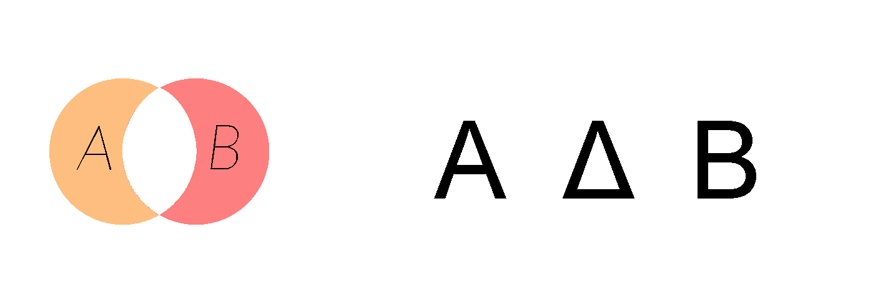

Diferencia simetrica
Dados dos conjuntos A y B, su diferencia simétrica, A Δ B, es un conjunto que contiene los elementos de A y los de B, excepto los que son comunes a ambos
EJEMPLOS
La diferencia simétrica del conjunto de los números pares positivos P y el conjunto de los cuadrados perfectos C es un conjunto D que contiene los cuadrados impares y los pares no cuadrados:
P=[2,4,6,8,10,12,14,16...]
C=[1,4,9,16,25...]
D=[1,2,6,8,9,10,12,14,18...]
La diferencia simétrica de conjuntos se denota por Δ, por lo que el ejemplo anterior se expresaría así: P Δ C = D

Diferencia simetrica del conjunto A y B